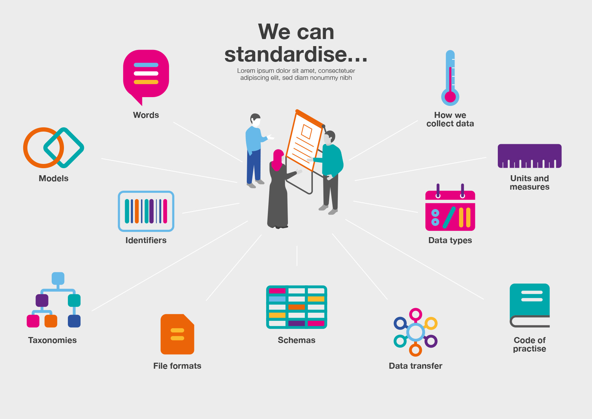

Types of open standards for data
There are thousands of open standards for data in use every day around the world. To help make sense of them, we grouped standards according to their main purpose and products.
With open standards for data, you can:
share vocabularies and common language using common models, attributes and definitions, with outputs like: registers, taxonomies, vocabularies and ontologies
exchange data within and between organisations and systems using common formats and shared rules, with outputs like: specifications, schemas and templates
provide guidance and recommendations for sharing better quality data, understanding processes and information flow, with outputs like: models, protocols, and guides
All open standards share common features, for example being available for anyone to access, use or share. Depending on the purpose and products of a given open standard, some features are more relevant than others. For example, it is important when using a data exchange standard to check that data has been produced correctly by checking the data against the standard’s rules.
This isn’t necessary for standards focused on guidance or a shared vocabulary because using these standards doesn’t produce new data.
Standards to share vocabulary
A shared vocabulary helps people and organisations communicate the concepts, people, places, events or things that are important to meet their needs or solve their problems.
A good shared vocabulary focuses on a specific area and uses clear, unambiguous definitions of the words and concepts it contains.
Shared vocabularies range from simple lists of words and their meaning to more complex products. The complexity of a vocabulary depends on the complexity of the problem being solved.
Typical vocabulary formats include:
registers comprising authoritative lists
taxonomies that group things together
vocabularies that are collections of defined words
ontologies that describe concepts and relationships
With a shared vocabulary, you can standardise:
concepts that represent important information, for example ‘education’, ‘crime’, or ‘procurement’
words used in the context of the problem being solved, for example ‘school’, ‘court’, or ‘contract’
attributes that are properties of people, places, events or things, and give us more information about them, for example a person’s name
relationships between people, places, events or things, for example ‘married to’, or ‘manufactured by’
standard codes or identifiers that identify people, places, events or things, for example ‘postal codes’, ‘passport numbers’, or ‘vehicle registration numbers’
units of measurement that describe how quantities are measured, for example ‘inches’, ‘centimeters’, or ‘centigrade’
models that describe people and organisations operating in an area, and the relationships between them based on how information flows
Shared vocabularies are frequently used with data exchange standards to produce better quality data that is easy to analyse and interpret.
Examples of shared vocabularies:
BBC Ontology is used to describe BBC concepts like organisations and sports teams
Local authorities for England register is an authoritative list of local authorities managed by the Department for Communities and Local Government
Standards to exchange data
Open standards can support better quality data by providing rules on what to share and how to share it.
Standards for exchanging data specify common formats and shared rules that lead to consistent data. A good standard for data exchange solves a specific problem and provides tools to check that data has been properly structured.
Typical data exchange standards define a common format for data that describes how data should be serialised or structured for sharing. Or it might combine common formats, shared vocabularies and other rules to describe what data should be shared to solve a specific problem.
For data exchange, you can standardise:
formats that describe how data is structured for sharing or storage, for example file and data formats like csv, json and xml
data types that describe how values related to people, places, events or things are expressed, for example a person’s name is text, their age is a whole number
data transfers that define the rules on sharing, exchanging or providing access to information, for example an API to find some data, or complete a transaction
rules that describe what data to share, the schemas, formats and shared vocabularies to use and other rules needed to solve a specific problem in a template or specification
maps that describes how models are expressed as data exchange formats – for example mapping the output of a smart city concept model to a data exchange format that information systems can read and write
Examples of data exchange standards:
General Transit Feed Specification (GFTS) is the worldwide de facto standard for publishing, accessing, sharing and using public transport information
CSV is the plain text format for structuring data files using rows and columns
Standards for guidance
An open standard that provides guidance helps people and organisations understand and document information flows and data models needed to solve their problem.
A good guidance standard focuses on providing a framework and recommendations for capturing data and promoting understanding within an area or sector.
With a standard for guidance, you can standardise:
units and measures we use to help us collect data, for example, centigrade, latitude and longitude, and meters
processes that describe protocols or methods for measuring, capturing or sharing data consistently, for example, statistical methods like sampling populations
codes of practice that supports consistent data practices, for example, best practices, recommendations, and other guidance
Examples of guidance standards:
BSI PAS 182 Smart city concept model helps decision-makers and organisations that provide services in cities remove barriers to sharing information
OpenEHR is the international standard for building flexible health data repositories that can be used with any vendor
Standards can be mixed and matched
We grouped open standards by their main purpose and outputs, however many open standards draw features from one or more categories to achieve their goals.
| We can standardise | ||
|---|---|---|
| Shared vocabulary | Words | Agreeing on definitions for the words we use to communicate, e.g. ‘school’, ‘court’, or ‘contract’ |
| Shared vocabulary | Models | An agreed way of thinking about the types of data that we want to exchange, e.g. a concept map or an entity relationship model |
| Shared vocabulary | Taxonomies | How we classify and describe things, e.g. codes and categories |
| Shared vocabulary | Identifiers | The identifiers we agree to use to help us describe people, place, things and concepts in our data, e.g. a company number |
| Data exchange | File formats | The file formats we use to store and publish information, e.g. JSON, CSV, or XML |
| Data exchange | Schemas | The rules for how to use a file format to exchange some data, e.g. how to use a CSV file to share planning data |
| Data exchange | Data types | How we consistently write down different types of data, e.g. date, time and currency formats |
| Data exchange | Data transfers | The methods by which we exchange information or provide access to it, e.g. an API to find some data, or complete a transaction |
| Guidance | How we collect data | How we consistently measure values and observe data, e.g. how to record a temperature reading, or measure a value in an experiment |
| Guidance | Units and measures | The units and measurements we use to help us collect data, e.g. centigrade, lat/long, meters, etc |
| Guidance | Codes of practice | Best practices, recommendations, and other guidance that supports consistent data practices |
Many standards for exchanging data reuse existing standards, for example, a list from a shared vocabulary or a data format that describe how data is structured for sharing or storage.
More complex shared vocabularies like ontologies, can reference simpler shared vocabularies like lists, for example, Popolo, the international open government data specifications standard reuses the list of genders from the vCard format specification rather than creating a new list. Standards for guidance can help people and organisations design models to be used with existing standards.
 Source: The Open Data Institute
For example, the Brownfield Site Register Open Data Standard for sites in England, suitable for residential redevelopment, includes shared vocabularies like agreements on specific words, taxonomies, identifiers and units. The standard uses a CSV format that describes how data is structured for publication. The Water Point Data Exchange Standard (WPDx) uses existing geospatial and ISO standards and extends them for specialist use by their community.